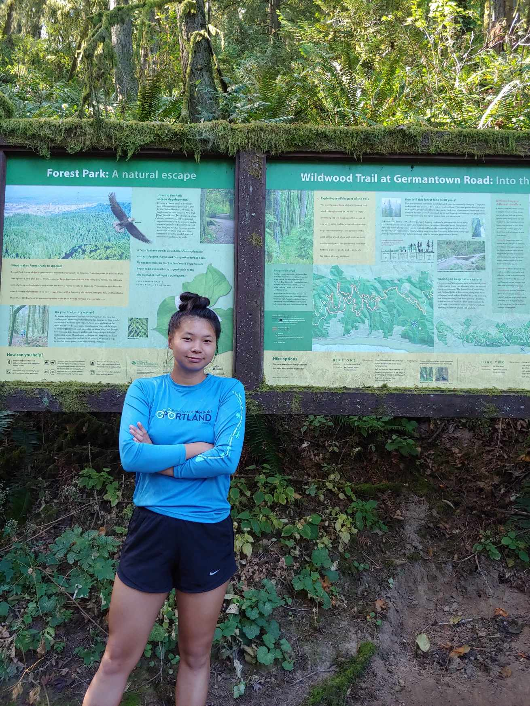

A page to share a bit about myself and learn some html, css, & js in the process.

My name is Tianna, and I'm an engineer with a passion for data analytics. I have a B.S. in Chemical Engineering from Oregon State University (go beavs), and as a PNW native I am obligated to spend much of my freetime outdoors enjoying the outdoors.
Born in Vietnam, I call Oregon home. I grew up in the Portland area, and it was there where I fell in love with chemistry during my high school chemistry class. I searched Google for jobs related to chemistry and math, and there it was: chemcial engineering. Perfect. With great job stability, opportunities to positively impact society, and career flexibility, chemical engineering seemed like the perfect field. One campus visit and a few generous scholarships later, and I found myself committing to Oregon State University.
I'll spare you my resume details (which you can under "Resume" in the banner) in favor of my hobbies, of which there are many.
1. Music: When I was 2 years old (I don't remember this, but my mom tells the story often), I saw a violinist on TV, and told her "I will play that one day!" I started out on piano at 4, with my oldest sister as my instructor, but when I was 7 I finally (!) got a violin rental and began violin lessons. I currently play as a first violin with the Hillsboro Symphony Orchestra, and although I do not regularly play piano anymore, I still enjoy trying out the occasional pop song. I also sporadically maintain a sheet music blog, which I started when I was 13 because I was frustrated I couldn't find free sheet music for a particular song I wanted to play.
2. Running: I started regularly running in college to help me feel control in life after my dad passed away from multiple sclerosis, and haven't looked back. My favorite distance is a half marathon, although I once ran a full marathon so I could put the 26.2 bumper sticker on my car. I enjoy both trail and road running, for different reasons, but my ankles enjoy road running more.
3. Brewing: I took up cider homebrewing in 2022, and enjoy making artisanal local small batch gluten free vegan non gmo cider. If the batch turns out well, I invite friends over to try some. if the batch turns out sour, I invite friends over to lessen my own ingestion.
4. Reading: Right now I'm on a memoir binge. Here is a list of some of my favorite books - if you try any out, let me know what you think :)
5. Cycling: This is not actually a hobby. I just bike to work because I hate traffic >:(
6. Coffee: Make no mistake, I am no coffee connoisseur. I am a solidly average coffee enjoyer. But oh do I relish in being a solidly average coffee enjoyer. I love trying out different shops in which to eavesdrop or read a book, and thankfully Portland is plentiful when it comes to coffee joints! If I am feeling unadventerous, my regular is a 12oz vanilla latte (in a ceramic cup if possible).
7. Cans: Collecting cans is not just a favorite pastime, but it is also a favorite presentime. It's free money, my friends don't want to recycle the cans themselves, and I guess this is my side hustle, if you will. I have a technique for depositing the cans as quickly as possible, and I see it as a science.
8. Food: I'm a big foodie on a smaller budget ($10-20). I post to my foodstagram (foodie instagram) regularly on my latest and greatest ventures, and what made that dish so delectable. I'm especially a sucker for spicy food, so if you don't like spicy food, I'm sorry that your life is boring. Korean, Thai, Viet, Cambodian, and Laotian are my top 5 favorite cuisinal cultures, but I'm a big fan of Mexcian food, too!
WIP
Misc